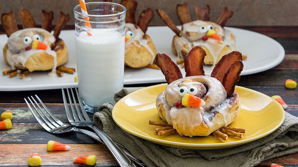

1 1/2 lb. small sweet potatoes, cut lengthwise into 1/2" wedges
1 small head cauliflower, cut into florets
7 tbsp. extra-virgin olive oil, divided
Kosher salt
Freshly ground black pepper
3 tbsp. sherry vinegar
8 c. torn mixed lettuces
2/3 c. pomegranate seeds
Directions
Toss together sweet potatoes, cauliflower, 3 tablespoons olive oil, salt and pepper on a rimmed baking sheet. Roast at 425 degrees F, tossing once, until golden, 25 to 30 minutes; cool.
Whisk together remaining olive oil, sherry vinegar, salt and pepper in a bowl. Add lettuces, pomegranate seeds, and roasted vegetables; toss to coat. Serve immediately.
Thanksgiving Special
Cinnamon Roll Turkeys

Total time: 30 minutes
Difficulty: Easy
Ingredients
1 can (17.5 oz) Pillsbury™ Grands!™ refrigerated cinnamon rolls with icing
10 slices bacon
5 candy corns
5 red mini candy-coated chocolate candies
5 candy eyeballs
15 mini pretzel sticks, cut in half
Directions
Heat oven to 350°F. Line cookie sheet with cooking parchment paper.
Set icing aside. Separate dough into 5 rolls; place about 3 inches apart on cookie sheet. Unroll each roll about 1 inch; tuck dough into roll to create neck of turkey.
Bake 20 minutes or until light golden brown. Remove from cookie sheet to cooling rack; cool 5 minutes.
Meanwhile, cook bacon until crisp; drain on paper towel-lined plate. Cut bacon slices in half. Tuck 4 halves of bacon into back of each cinnamon roll so they stick up and look like tail feathers.
Drizzle tops of rolls with icing. Decorate turkeys with candy eyeballs, candy corn and candy-coated chocolate candies. Before serving, place halved pretzel sticks underneath each turkey to resemble turkey’s feet.